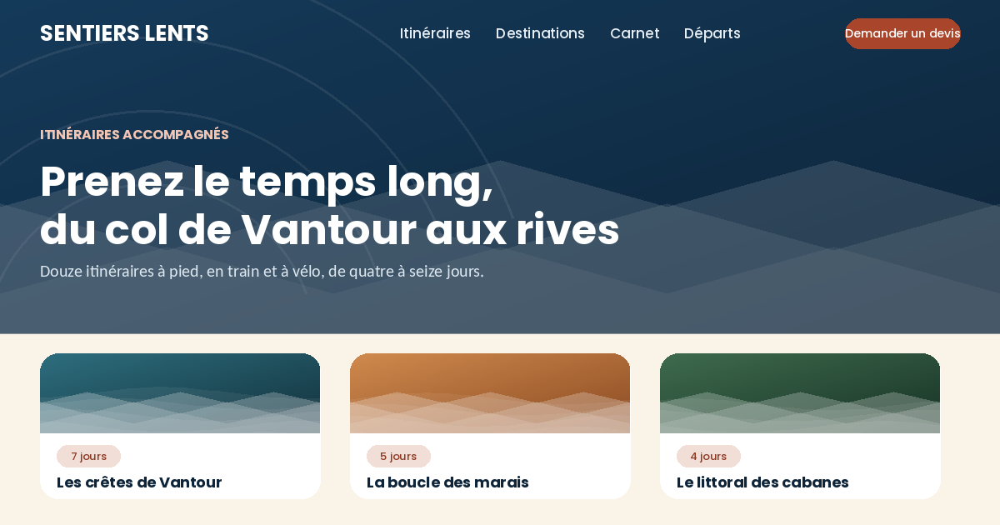
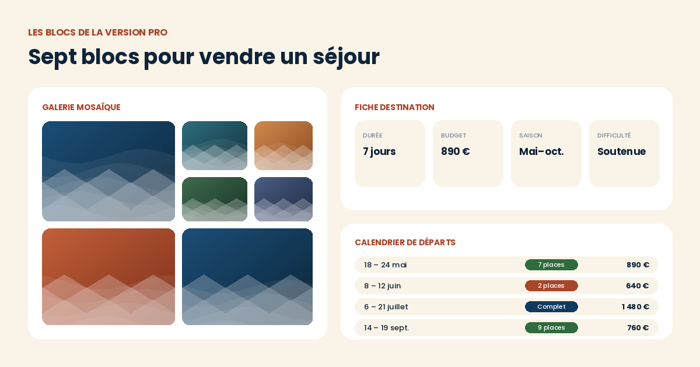
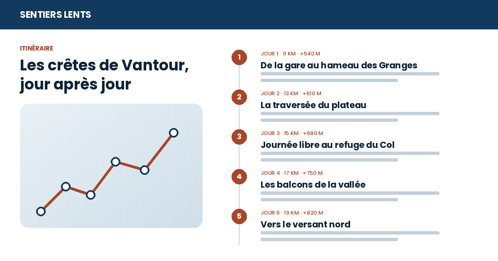

Le système de design
Palette, échelle typographique et composants. Les ratios de contraste indiqués sont ceux mesurés sur les couples de couleurs livrés par défaut.


Une liste d'étapes numérotées avec distance, dénivelé et contenu libre, accompagnée d'un tracé illustratif.
Une mosaïque à tuiles larges et hautes ; le clic ouvre la photo en grand, avec fermeture à l'Échap et au clic sur le fond.
Durée, budget, saison et difficulté en quatre cartouches, avec un indicateur de niveau sur quatre crans.
Trois citations en cartes, avec avatar et contexte du séjour.
Un tableau dates / itinéraire / places / prix, avec pastilles d'état (places, dernières places, complet).
Un gabarit de formulaire à relier au module Formulaires d'Odoo ou à votre outil de gestion des demandes.
Une chronologie jour par jour, avec images intercalées.
Une inversion complète des couleurs, activable par un bouton à poser dans la page ou automatiquement selon la préférence système du visiteur. Le choix est mémorisé dans le navigateur. Contrastes du thème sombre vérifiés au niveau AA.
Trois dispositions d'en-tête (centrée, avec bandeau d'information, minimale) et deux de pied de page (étendue à quatre colonnes, compacte), sélectionnables directement dans les panneaux « En-tête » et « Pied de page » de l'éditeur de site.
Galerie mosaïque, fiche destination et calendrier de départs.

Étapes numérotées, tracé illustratif et informations de distance et de dénivelé.

Palette, échelle typographique et composants. Les ratios de contraste indiqués sont ceux mesurés sur les couples de couleurs livrés par défaut.
Fiche, galerie, témoignages et devis sur /destination-vantour.
Étapes, calendrier de départs et carnet de bord sur /itineraire-cretes-de-vantour.
Une palette sombre s'ajoute aux deux palettes de la version gratuite.
Édité par DYONYSOS — conseil et développement Odoo.
Support et questions avant achat :
welcome@dyonysos.fr
https://dyonysos.fr
Toutes les images de démonstration sont générées par programme (dégradés, formes géométriques, compositions typographiques) : aucune photographie ni illustration tierce n'est incluse. Les contenus de démonstration sont fictifs.